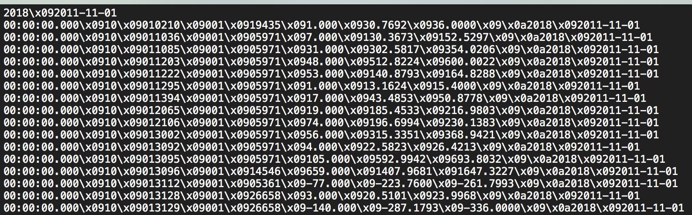
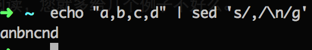

Mac 替换换行符
Mac 替换换行符
今天又学到一招，利用 sed 替换文本文件中某字符为换行符。
起因是这样，导师一个文本文件貌似损坏了，整个文件只有一行(可以这么说）。表现为：原来的 tab 分隔符变成了\x09，换行符变成了\x0a。
以前就知道这类替换可以用 sed 或者 awk 之类的工具做。但是因为一直比较（恐惧？/懒惰？）命令行，而且网上一搜一大把解决方案。也就没有认真学。而且 man 的帮助文档很不好阅读，您就多给几个例子不好么。
表现如下:

需要转换如下
| 字段1 | 字段2 | 字段3 | 字段4 | 字段5 | 字段6 | 字段7 | 字段8 | 字段9 |
|---|---|---|---|---|---|---|---|---|
| 2018 | 2011-10-03 00:00:00.000 | 10 | 10210 | 1 | 19435 | 2 | 61.5384 | 71.9999 |
| 2018 | 2011-10-03 00:00:00.000 | 10 | 11036 | 1 | 5971 | 7 | 130.3673 | 152.5297 |
| 2018 | 2011-10-03 00:00:00.000 | 10 | 11085 | 1 | 5971 | 31 | 302.5817 | 354.0206 |
网上搜索解决方案
1 | echo "a,b,c,d" |sed 's/,/\n/g' |
结果行不通，直接把逗号换成 n 了 结果如下：

继续搜索加上 Mac 关键字
找到 http://superuser.com/questions/307165/newlines-in-sed-on-mac-os-x
里面给出的解决方案是：
1 | echo 'foo bar' | sed -e 's/ /\'$'\n/g' |
问的人想知道 \'$'\n/g' 什么意思，我不管，能用就好。
感慨：
- 有空还是学学比较好，走出自己的舒适区。
- 最好有一本参考手册，例子很多的那种，在手边。